Documentation
Termpolis Docs
The definitive guide to Termpolis — the AI-native terminal where Claude, Codex, Gemini, and Qwen work together as a team. Every feature, every panel, every shortcut.
Overview
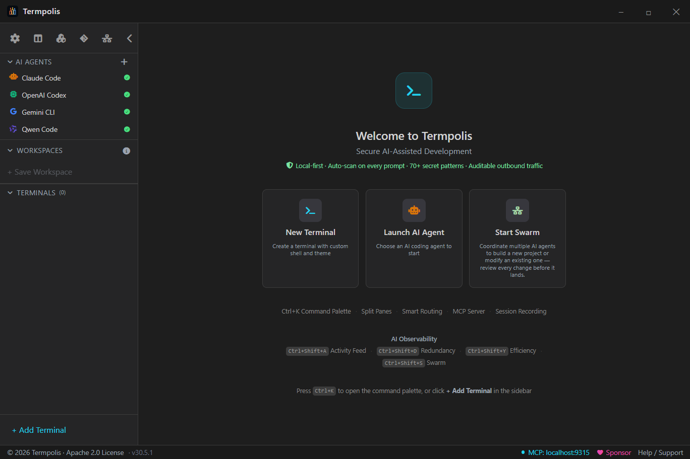
Termpolis is a cross-platform desktop terminal manager (Windows, macOS, Linux) built on
Electron + React + TypeScript with node-pty powering the underlying shells.
It ships as a native app — code signed on Windows, notarized on macOS.
What makes it different:
- Multi-agent swarm. Claude, Codex, Gemini, and Aider + Qwen can work together on a task. A dedicated Claude Code instance acts as the conductor.
- MCP server baked in. AI agents control Termpolis via Model Context Protocol — open terminals, run commands, send messages.
- Transparent routing. Every subtask shows which agent got it, why, and what it cost.
- Activity observability. Every token, every tool call, every message from every agent is visible in real time.
- Intervention controls. Pause, cancel, or steer any agent mid-task without leaving the feed.
- Shared memory. A RAG-backed memory store that any agent can read and write via MCP.
- Free local agent. Aider + Qwen3-Coder via Ollama — zero-cost work is always on the menu.
Installation
Download the latest build from the downloads page or GitHub Releases.
| Platform | File | Signed |
|---|---|---|
| Windows | termpolis-setup-<ver>.exe | Code-signed |
| macOS (Apple Silicon) | termpolis-<ver>-arm64.dmg | Notarized |
| macOS (Intel) | termpolis-<ver>.dmg | Notarized |
| Linux | termpolis-<ver>.AppImage | — |
Requirements
- Windows 10 or 11 (x64)
- macOS 11 (Big Sur) or later — Apple Silicon and Intel builds ship separately
- Linux: AppImage runs on any modern glibc distro
- ~200 MB disk; 512 MB RAM minimum, 2 GB recommended when running multiple agents
Data directory
| Platform | Path |
|---|---|
| Windows | %APPDATA%\termpolis\ |
| macOS | ~/Library/Application Support/termpolis/ |
| Linux | ~/.config/termpolis/ |
First launch
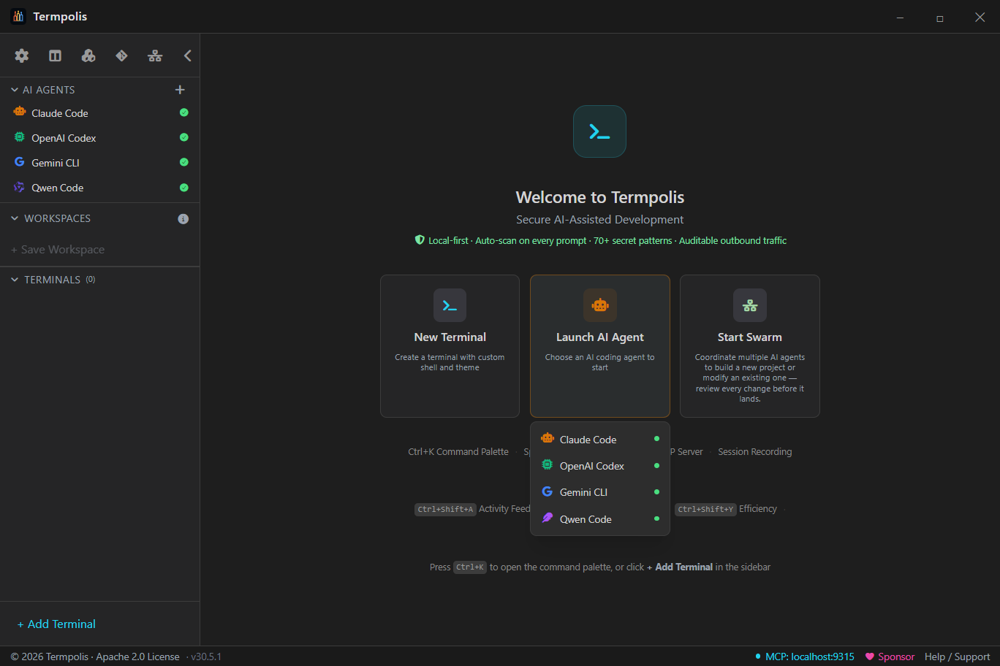
The welcome view is what you see when no terminals are open. It has quick-launch buttons for common shells and AI agents, recent workspaces on the left, and a tips row at the bottom.
Press Ctrl + T (⌘ + T on macOS) to open the new-terminal modal, or click a launch button to spawn a terminal immediately.
Terminals

Every pane is a full pty-backed terminal powered by node-pty — real TTY
semantics, xterm escapes, signal forwarding. Not a shim.
Create one with Ctrl + T. Pick a shell, a working directory, optionally an agent profile, plus a label and color.
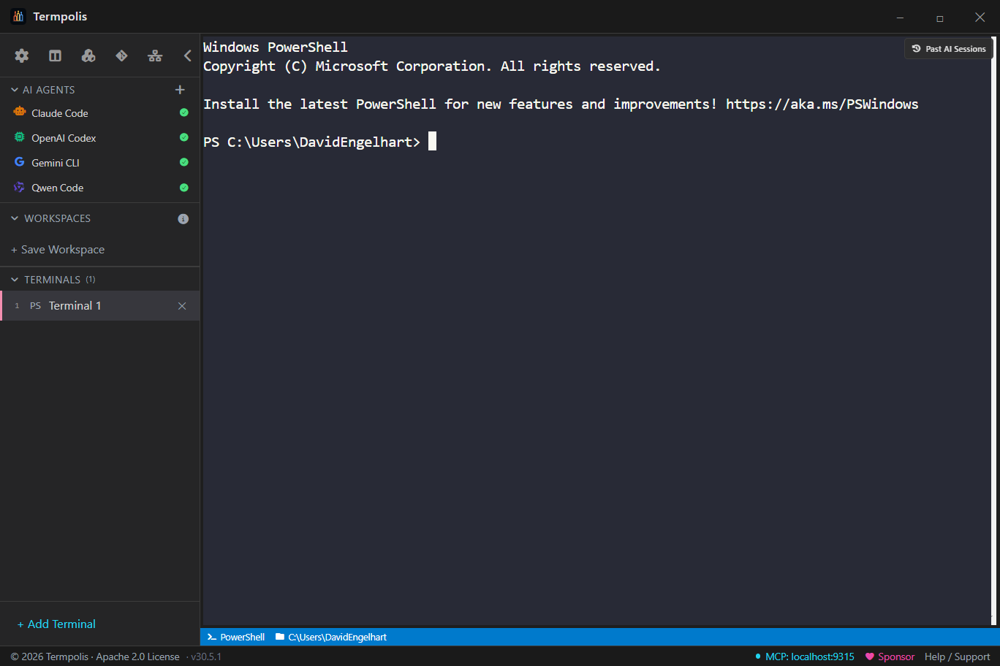
Closing a terminal with an active process prompts for confirmation — this protects long-running tasks (model downloads, builds, agent sessions) from accidental loss.
Tabs, splits & grid
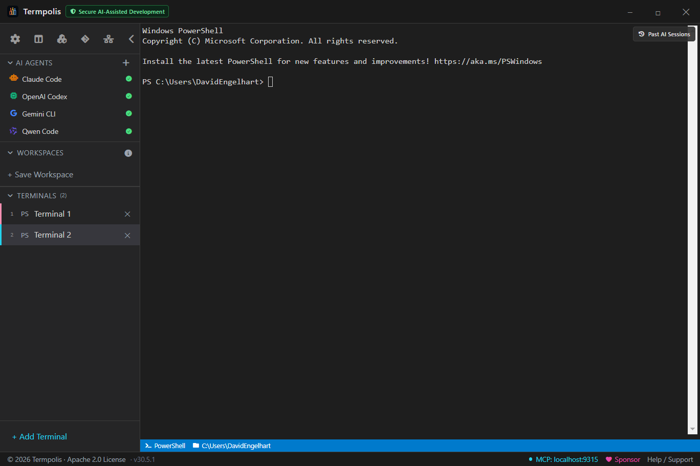
Terminals are arranged in one of three view modes. Pick whichever fits the task — tabs for deep focus, splits for side-by-side work, grid for watching the swarm.
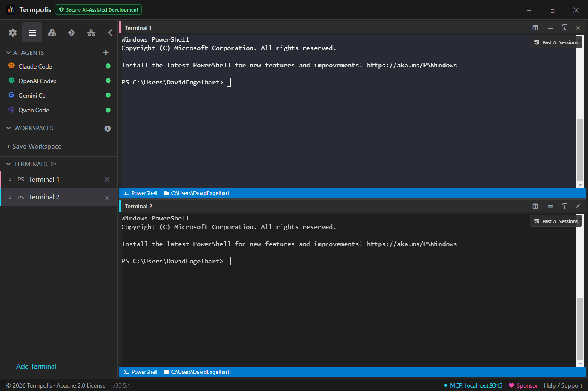
- Ctrl + \ — split horizontally
- Ctrl + Shift + \ — split vertically
- Alt + Arrow — focus adjacent pane
- Ctrl + Shift + W — close focused pane
Settings

Open with the gear icon or Ctrl + ,. Changes save immediately — no apply button.
Tabs: Themes, Keybindings, Agent Capability, Shells, Behavior, Advanced.
Themes
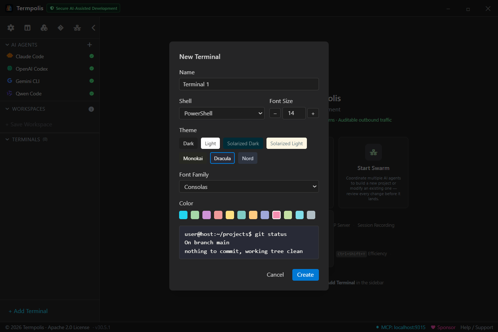
Ships with Termpolis Dark (default), Dracula, Solarized Dark, Nord, Gruvbox Dark, Tokyo Night, Monokai. Each applies to terminals, app chrome, and AI conversation syntax highlighting. Import any VS Code theme JSON — the parser maps tokenColors to xterm colors automatically.
Keybindings
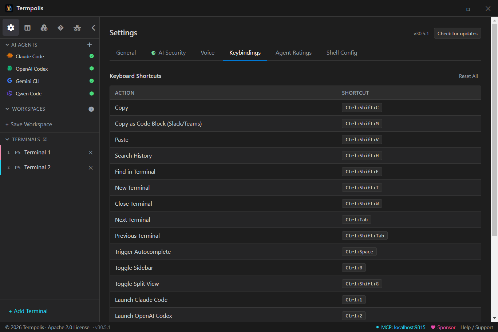
Bindings are platform-aware — Ctrl becomes ⌘ on macOS automatically. Conflicts are flagged inline when rebinding.
Agent capability ratings

The heart of smart swarm routing. Score each agent (Claude, Codex, Gemini, Aider+Qwen) from 0–100 across 10 categories: Refactoring, Testing, Documentation, Code review, DevOps/Infra, Debugging, Frontend, Backend/API, Data/SQL, Bulk work. Defaults reflect model-family strengths; tune them to match your experience.
The Token Cost column ($, $$, $$$, Free) drives cost-aware routing.
Command palette

Actions, workspaces, recent commands, files — all searchable with fuzzy matching. Exact matches float to the top.
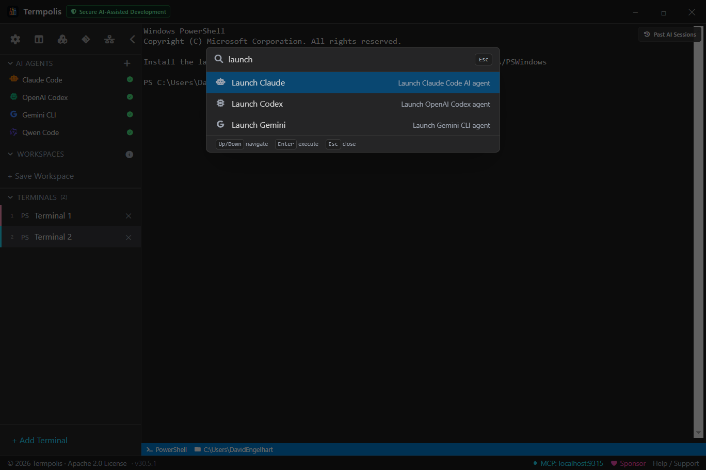
Prompt templates
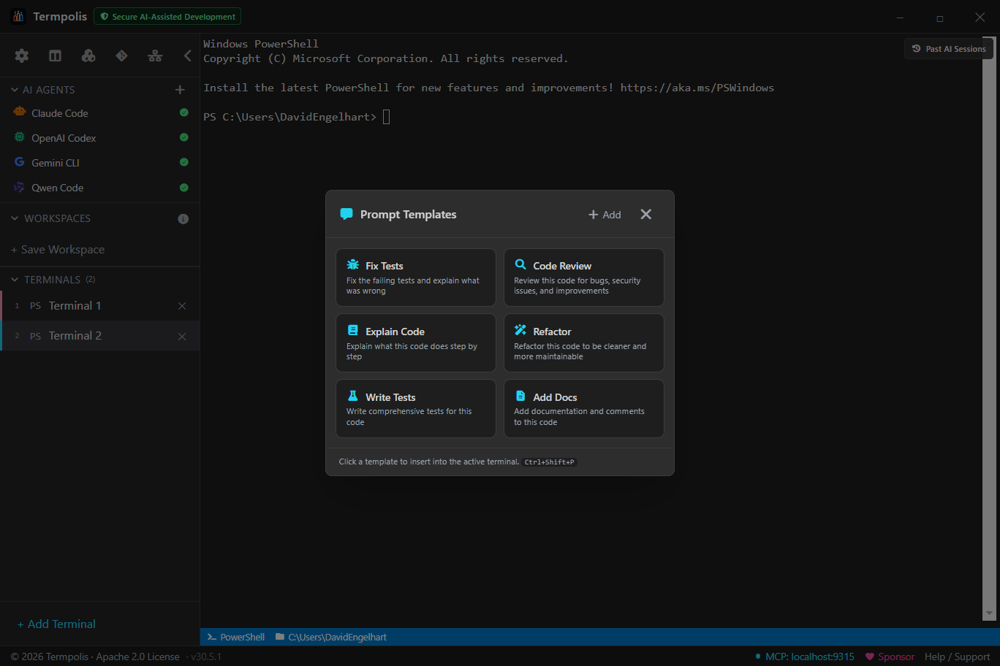
Built-in templates: Explain this code, Write tests,
Refactor for readability, Find security issues,
Document this API, Code review — strict. Each supports
{{variables}} filled from selection, cwd, or free-form input. Add your
own — they save to prompt-templates.json.
Workflow templates
Built-in flows: Start a new feature, Bug repro,
Pre-PR review. All editable. Create your own with the visual editor — saved
to workflow-templates.json.
Context panel
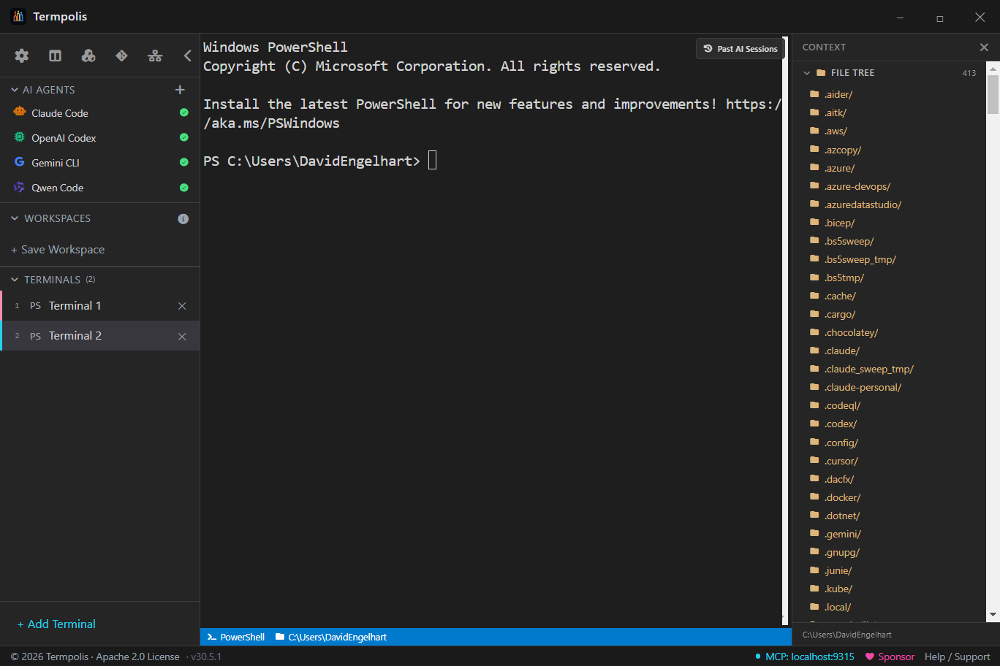
Shows what's "in scope" right now — git branch, focused terminal, active agent with live token count, recent files, and pins. Also the pane agents read from when you ask "what am I looking at?" — explicit context sharing, not implicit slurp.
History search
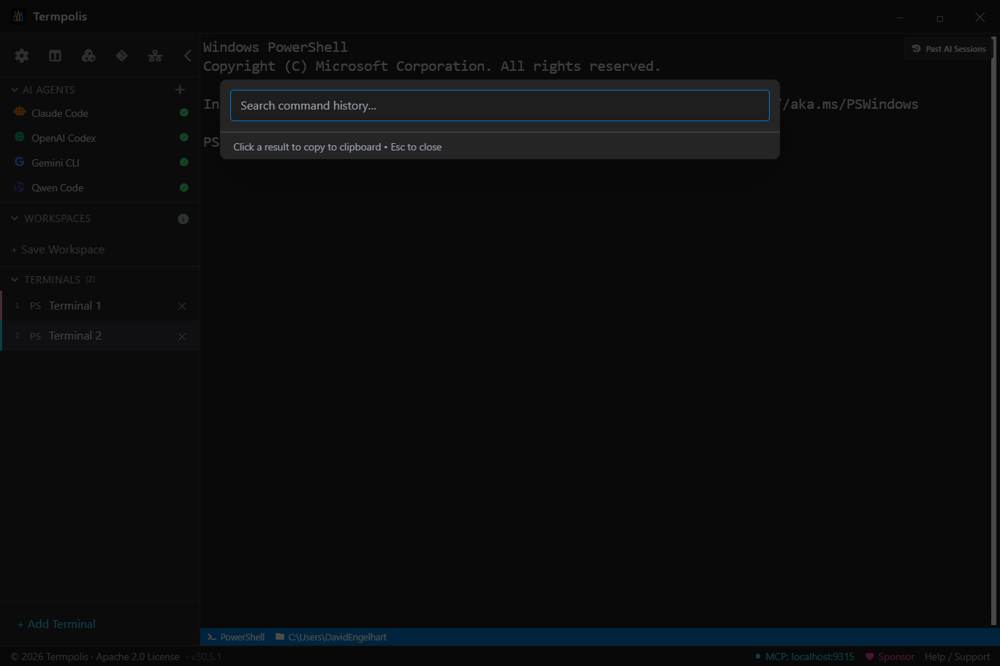
Spans every terminal Termpolis has ever opened, not just the current shell's history file. Filter by command, cwd, exit code, time range, or shell type. Click a result to copy, re-run, or pin to context.
Conversation search
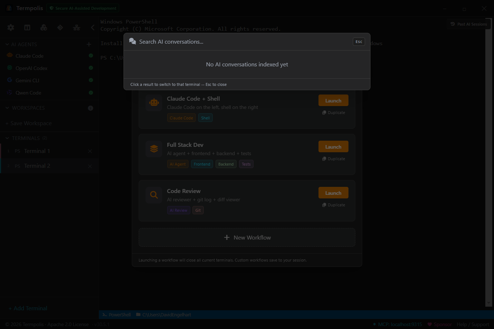
Search across every agent session Termpolis has recorded. Filter by agent, kind (prompt, tool call, tool result, error), or time range. Each hit deep-links into the original session so you can reopen, re-prompt, or copy a successful flow.
Git panel
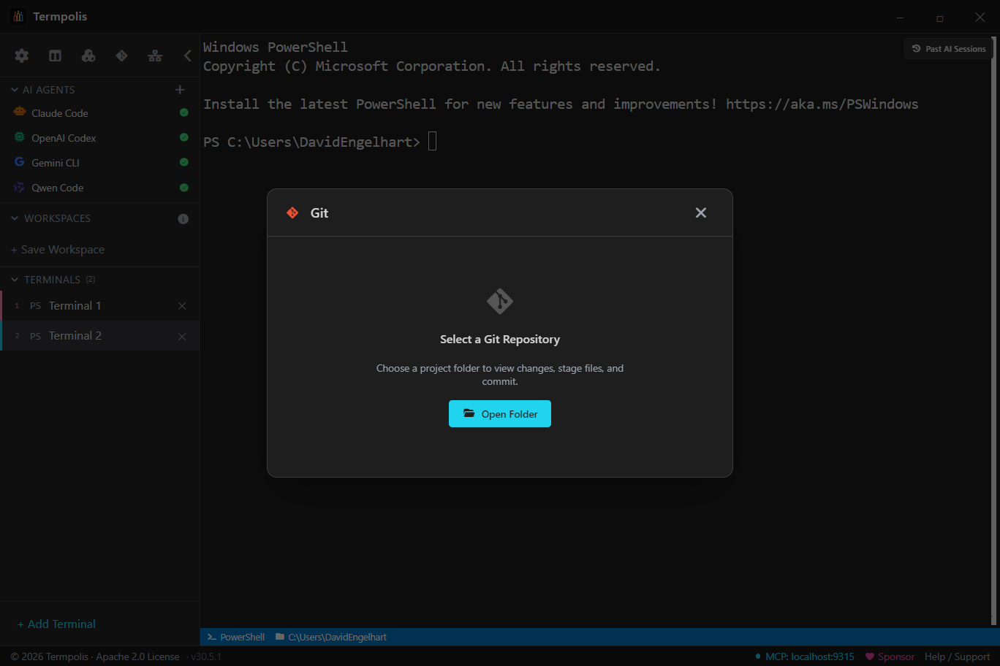
Current branch + ahead/behind, staged & unstaged sections with inline diff, last 50 commits as a graph, actions for commit/push/pull/fetch/stash/branch switch. Click the ✨ next to the commit-message input and an agent drafts a message from the staged diff.
Every action runs as a real git command in a spawned process — no
reimplementation — so you can always drop to the CLI and see the same state.
AI agent profiles
Launch any AI CLI as a profiled terminal: Claude Code, Codex, Gemini CLI, Aider. Profiles come pre-configured with the right shell + startup command, a color + label, an MCP bootstrap (where supported), and an optional dedicated working directory. Custom profiles take any command — if it's in PATH, you can profile it.
MCP server
Termpolis ships an MCP (Model Context Protocol) server so agents can control the app
from inside a conversation. Listens on http://localhost:48211 by default.
| Tool | What it does |
|---|---|
list_terminals | Enumerate open terminals |
open_terminal | Spawn a new terminal |
close_terminal | Close a terminal by ID |
focus_terminal | Bring a terminal to foreground |
send_input | Send raw text + control chars |
read_buffer | Read last N output lines |
wait_for_prompt | Wait for a regex match |
list_workspaces | Enumerate workspaces |
switch_workspace | Change active workspace |
git_status | JSON summary of current repo |
run_workflow | Execute a named workflow |
broadcast_message | Swarm-wide notification |
get_session_id | Calling session's opaque ID |
post_activity | Push an event into the feed |
memory_write | Persist a labeled memory entry |
memory_search | RAG search (semantic + keyword) |
memory_list | List recent memory entries |
Authenticated via a per-launch token at ~/.termpolis/mcp-token. Tight
origin checks, rate limits, and an audit log.
Swarm dashboard
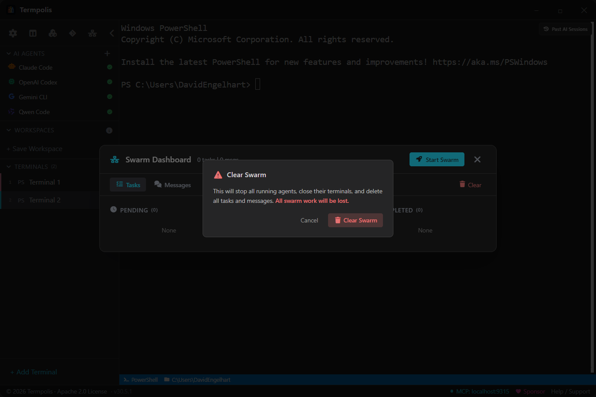
The dashboard has three tabs:

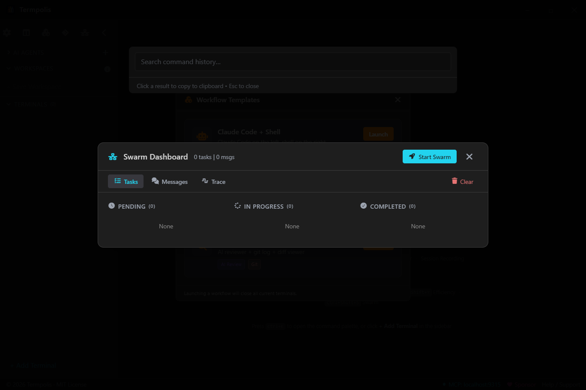
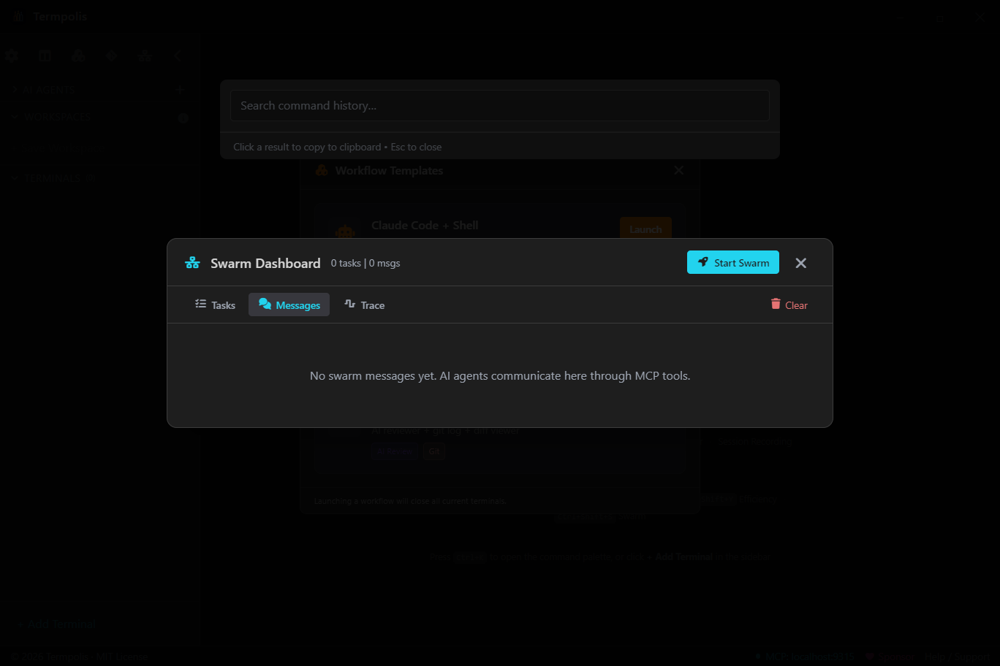
AI conductor
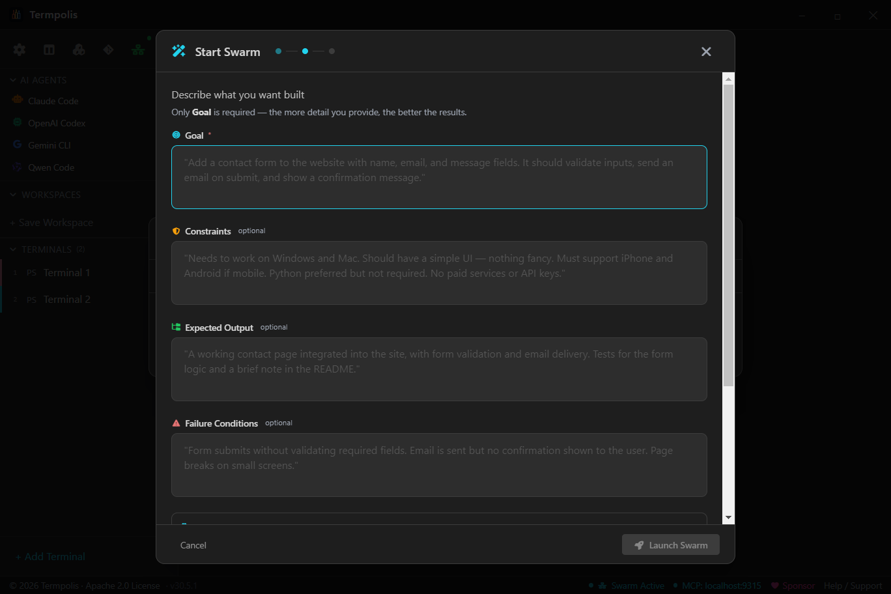
A dedicated Claude Code instance running with a system prompt purpose-built for orchestration. It reads your task, searches shared memory for relevant prior work, decomposes into subtasks, picks the best-fit agent per task (capability + load + cost), delegates via MCP, watches progress, decides when to merge partial results, re-plan, or declare done.
Not keyword matching — actual AI reasoning, because the conductor is itself a frontier model. Open its terminal and watch it think live.
Activity feed
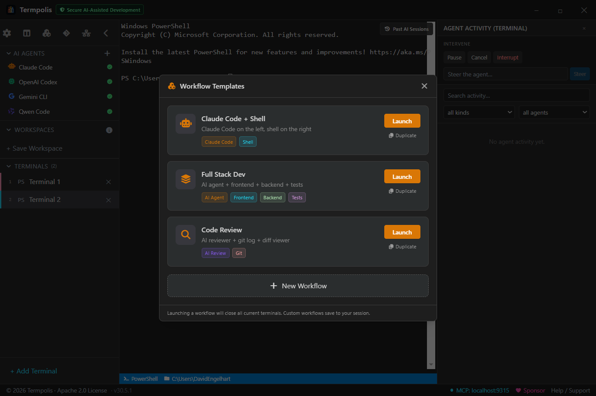
Open from the sidebar (Ctrl + Shift + A) or any
terminal's context menu. Event types: message, tool_call,
tool_result, token_update, compaction,
error, status_change, mcp_audit.
Three filters combine: full-text search, kind dropdown, agent-type dropdown. Open scoped to a terminal or globally across all sessions — scope is labeled in the header. Right-click an event → Pin to float it to the top of the context panel.
Intervention controls
Every scoped Activity Feed includes a row of intervention controls above the event list:
- Pause — sends
ESC(0x1B) to the agent's pty. - Cancel — sends a single
Ctrl+C(0x03). - Interrupt — sends double
Ctrl+C(0x03 0x03) — hard stop. - Steer — type a new instruction and send it directly to the agent's stdin.
Every agent is a pty, so writing control chars or text to stdin is the fastest, most reliable way to take over. No new IPC surface. Each intervention is logged as an event — full audit trail of every mid-flight correction.
Swarm review
When a task requires review before handoff (default for code-review tasks), the conductor pauses and opens the Swarm Review Panel — task title, assignee output, diff if applicable, and three buttons: Approve, Request Changes, Reject, plus an optional comment.
Approve hands off downstream. Request Changes reassigns to the same agent with your comment. Reject drops the output and re-plans.
Shared memory (RAG)
A cross-agent memory store backed by JSONL + embeddings. Any agent can:
- Write via
memory_write— stores{label, content, tags, terminalId, ts}plus an embedding from Ollama'snomic-embed-text. - Search via
memory_search— cosine similarity over embeddings, blended with keyword overlap. - List via
memory_list— recent entries with filters.
Why it matters: when Claude figures out your auth module, Codex shouldn't have to
figure it out again. Memory is context-sharing at the swarm level. Lives at
~/.termpolis/swarm-memory.jsonl, plain text.
Observability
A full observability stack for AI work — the "watchers" system. A lightweight in-process event bus that watches for:
- Token pressure — approaching compaction.
- Stuck sessions — agent silent for > N seconds.
- Error cascades — repeated errors in a short window.
- Redundancy — two agents doing overlapping work.
- Efficiency — rolling token-cost-per-task average.
Watchers surface alerts in the status bar, activity feed, or system notifications. Thresholds tunable in settings.
Status bar
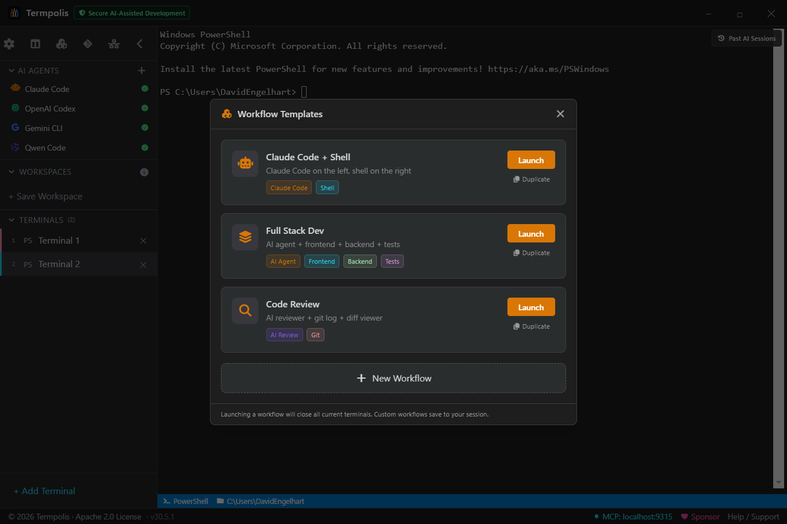
Bottom strip, left to right: workspace + git branch, focused terminal's shell + cwd, active-agents summary, swarm progress %, session-wide token counter, watcher notifications, MCP server indicator (green = healthy).
Keyboard shortcuts
| Action | Windows / Linux | macOS |
|---|---|---|
| New terminal | Ctrl+T | ⌘+T |
| Close focused terminal | Ctrl+W | ⌘+W |
| Next tab | Ctrl+Tab | ⌘+] |
| Previous tab | Ctrl+Shift+Tab | ⌘+[ |
| Jump to tab N | Ctrl+1…9 | ⌘+1…9 |
| Split horizontal | Ctrl+\ | ⌘+\ |
| Split vertical | Ctrl+Shift+\ | ⌘+⇧+\ |
| Focus adjacent pane | Alt+Arrow | ⌥+Arrow |
| Command palette | Ctrl+K | ⌘+K |
| Settings | Ctrl+, | ⌘+, |
| Prompt templates | Ctrl+Shift+P | ⌘+⇧+P |
| Workflow templates | Ctrl+Shift+F | ⌘+⇧+F |
| Context panel | Ctrl+Shift+E | ⌘+⇧+E |
| History search | Ctrl+Shift+H | ⌘+⇧+H |
| Conversation search | Ctrl+Shift+I | ⌘+⇧+I |
| Git panel | Ctrl+Shift+G | ⌘+⇧+G |
| Activity feed | Ctrl+Shift+A | ⌘+⇧+A |
| Swarm dashboard | Ctrl+Shift+S | ⌘+⇧+S |
| New workspace | Ctrl+Shift+N | ⌘+⇧+N |
| Paste | Ctrl+Shift+V | ⌘+V |
| Zoom in / out | Ctrl+= / Ctrl+- | ⌘+= / ⌘+- |
| Reset zoom | Ctrl+0 | ⌘+0 |
Architecture
┌─────────────────────────────────────────────────────┐
│ Renderer (React) │
│ ├── Sidebar, Terminals, Panels │
│ ├── Activity Feed (observability UI) │
│ ├── Swarm Dashboard + Conductor view │
│ └── IPC client → window.termpolis bridge │
└──────────────────┬──────────────────────────────────┘
│ Electron IPC
┌──────────────────▼──────────────────────────────────┐
│ Main process (Node) │
│ ├── Terminal manager (node-pty) │
│ ├── Session persistence (session.json) │
│ ├── Workflow runner │
│ ├── Git adapter │
│ ├── MCP server (HTTP, 17 tools) │
│ ├── Swarm memory (JSONL + embeddings) │
│ ├── AI conductor (spawns Claude Code as a child) │
│ └── Watchers (event bus + alerts) │
└──────────────────┬──────────────────────────────────┘
│ localhost:48211 (MCP)
┌──────────────────▼──────────────────────────────────┐
│ AI agents (Claude, Codex, Gemini, Aider+Qwen) │
│ Each in its own pty-backed terminal │
└─────────────────────────────────────────────────────┘
Tech stack: Electron 29, React 18, TypeScript 5, Vite 5 (electron-vite), node-pty, xterm.js, Vitest (2100+ tests, >90% line coverage), Playwright, electron-builder, Azure Trusted Signing, notarytool.
Troubleshooting
Terminal won't start
Check the shell path in Settings → Shells. On Windows, PowerShell 7 lives at
C:\Program Files\PowerShell\7\pwsh.exe. On macOS, re-grant Termpolis Full
Disk Access in System Preferences → Privacy if you get "permission denied" for
zsh.
Agent CLI not found
The launch button fails silently if the CLI isn't in your PATH. Run
claude --version (or codex, gemini,
aider) in a Termpolis terminal to confirm. On macOS, GUI-launched apps
don't always inherit $PATH — restart Termpolis after updating
~/.zprofile.
Swarm conductor can't reach MCP
Check the MCP indicator in the status bar. If red, see
~/.termpolis/logs/mcp.log. Common causes: port 48211 in use (change in
Settings → Advanced), firewall blocking localhost.
Memory search returns nothing
Embeddings require Ollama running with nomic-embed-text pulled. Start it
and recent writes will succeed; historical keyword-only entries still match.
Reset everything
Close Termpolis, delete the data directory (see Installation), relaunch.